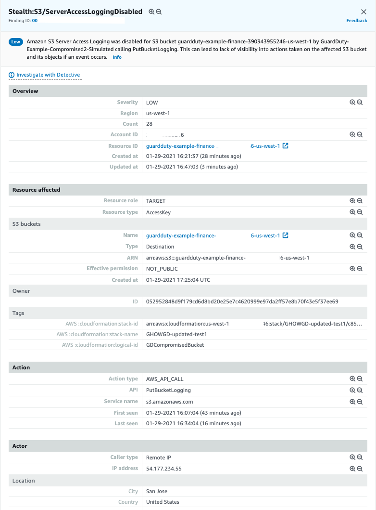

Compromised S3 Bucket (simulated)
You were already having a rough morning, you just finished your coffee and see a few more findings related to S3 in the GuardDuty console. These are different from the the previously seen IAM and EC2 findings.
None of your personal IAM credentials have actually been compromised or exposed in any way.
Architecture Overview

- The malicious instance makes API calls. API calls are logged in CloudTrail
- GuardDuty is monitoring the CloudTrail management events and S3 data events (in addition to VPC Flow Logs and DNS Logs) and analyzing this based on threat list, machine learning, baselines, etc.
- GuardDuty generates findings and sends this to the GuardDuty console and CloudWatch Events.
- The CloudWatch Event rule triggers an SNS topic.
- SNS sends you an e-mail with the finding information.
Investigation
Browse to the GuardDuty console to investigate
To view the findings:
- Navigate to the GuardDuty Console (us-west-2).
-
Click the
 icon to refresh the GuardDuty console. You should now see additional findings that are related to Stealth:S3 and Policy:S3.
icon to refresh the GuardDuty console. You should now see additional findings that are related to Stealth:S3 and Policy:S3.Based on the format you reviewed earlier can you determine the security issues by the finding type?
-
Click on the Stealth:S3/ServerAccessLoggingDisabled finding to view the full details. You can see the finding details include information about what happened, what AWS resources were involved in the suspicious activity, when this activity took place, and other additional information. Under Resource Affected, find the S3 bucket associated with this finding.

This finding informs you that S3 server access logging is disabled for a bucket within your AWS environment. If disabled, no logs are created for any actions taken on the S3 bucket or on the objects in the bucket, unless S3 object level logging is enabled. Even though this is a low severity finding, it is important to investigate why would someone disable logging as this can be used to cover up changes that otherwise should not have been made. To learn more, see S3 Server Access Logging.
-
Lets look at another one, click on Policy:S3/BucketBlockPublicAccessDisabled. This finding is generated when block public access settings are disabled, if they were previously enabled. This could be a legit activity or an innocent user could have accidentally changed the bucket settings. In such a situation it is always good to confirm with the bucket owner if this was an expected condition. But given the context of what is going on with this bucket where we also saw bucket logging being disabled, this seems more suspicious.
What actions did this IAM User take? Click on each of the findings, You can see under Action and then API the API calls were made. Are these management events or data plane events. GuardDuty is able to analyze large volumes of data and identify true threats in your environment but from an investigation and remediation stand point it is still important to correlate other data to understand the full scope of the threat. In this case an analyst would use the details in this finding to pinpoint historical user activity in CloudTrail. AWS also has a investigation tool called Amazon Detective that can help with further investigation and analyze the root cause of security issue.
Scenario Note
These IAM findings are being generated by the “malicious EC2” instance making API calls. These API calls generate findings because GuardDuty is looking for such S3 data plane API activity that can disable S3 logging and S3 block public access setttings.
The bucket has not been exposed in any way, if you go to the S3 console the public block settings at the account level are still enabled.
GuardDuty S3 Protection
S3 protection enables Amazon GuardDuty to monitor object-level API operations to identify potential security risks for data within S3 buckets.
GuardDuty monitors threats against Amazon S3 resources by analyzing AWS CloudTrail management events and CloudTrail S3 data events. These data sources monitor different kinds of activity, for example, CloudTrail management events for S3 include operations that list or configure S3 buckets, such as ListBuckets, DeleteBuckets, and PutBucketReplication. Examples of data events for S3 include object-level API operations, such as GetObject, ListObjects, DeleteObject, and PutObject.
GuardDuty monitoring of CloudTrail management events is on by default for all accounts that have enabled GuardDuty and is not configurable. However, S3 data event logs are a configurable data source in GuardDuty. The processes for enabling or disabling S3 data event monitoring is part of Configuring S3 protection for an individual account documentation.
View the CloudWatch Event rule
- Navigate to the CloudWatch console and on the left navigation, under the Events section, click Rules.
- Click on the rule that Alice configured for this particular finding (GuardDuty-Event-S3-Stealth-Policy).
- Under the Targets section, you will see a rule for an SNS Topic. Turns out Alice did not set up a Lambda function to remediate this threat either because the team is investigating using AWS Config managed rules to autoremediate such findings.
- Observe the input transformer, how would you modify this setting to get any additional data you need in the SNS email ?
GuardDuty can also sends its finding to Security Hub (if enabled) which helps aggregate findings from different AWS services as well as partner services. Security hub can then be used to take custom actions on these findings by using CloudWatch Event rules to send the findings to ticketing, chat, Security Information and Event Management (SIEM), Security Orchestration Automation and Response (SOAR), and incident management tools or to custom remediation playbooks.
Manually remediate S3 bucket
Since the bucket settings were changed you confirmed with the bucket owner that those changes need to reverted back.
- Browse to the AWS S3 console.
- Click guardduty-example-finance bucket in the bucket list.
- Click on the properties tab, scroll down to Server Access Logging, and click Edit, then Enable.
- Now click Browse S3 button and select the guardduty-example-log and click choose path.
- Finally click Save changes button and you have enabled server access logging.
- For making the bucket private again, click on the Permissions tab, and edit the Block public access (bucket setting)
- Check Block all public access box, then click Save changes and type 'confirm' in the dialogue box that appears. Now you have made the bucket private again.
Note
Another option for customers to protect against unintentional bucket exposures is to add service control policies (SCP). an SCP defines a guardrail, or sets limits, on the actions that the account's administrator can delegate to the IAM users and roles in the accounts.
Manually remediate the compromised IAM user through which the bucket settings were changed.
While the security team is analyzing the previous activity of this user to better understand the scope of the compromise, you need to disable the access key associated with the user to prevent any more unauthorized actions just like you did in "Compromised IAM Credentials" Scenario.
- Browse to the AWS IAM console.
- Click Users in the left navigation.
- Click on the user you identified in the GuardDuty finding and email notifications (GuardDuty-Example-Compromised2-Simulated).
- Click the Security Credentials tab.
- Under Access Keys, find the Access Key ID you identified in the finding and click Make Inactive.
Questions
Which data source did GuardDuty use to identify this threat?
Was the bucket actually exposed to the Internet?
Why is the severity of both these findings 'Low'?
How would you protect unauthorized access of Access Keys?